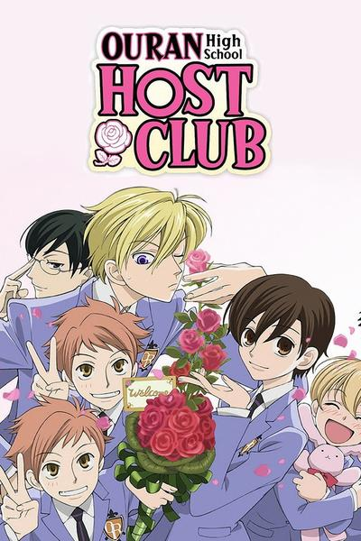
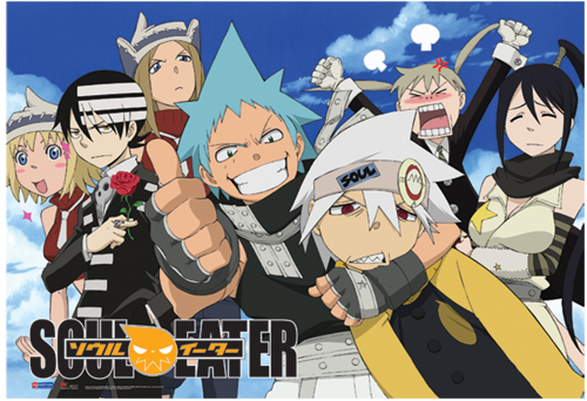
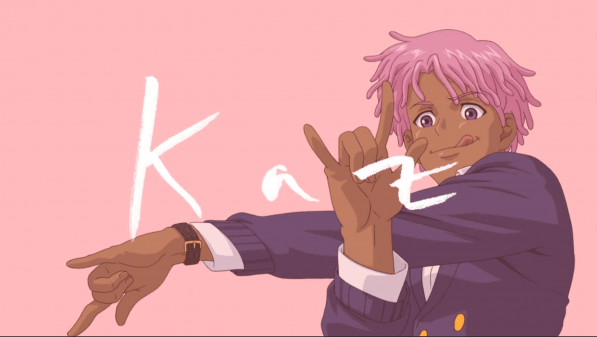
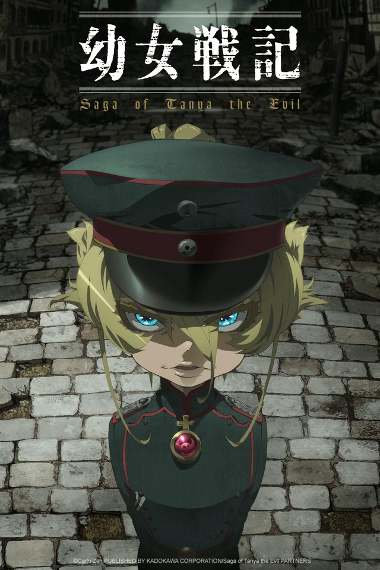
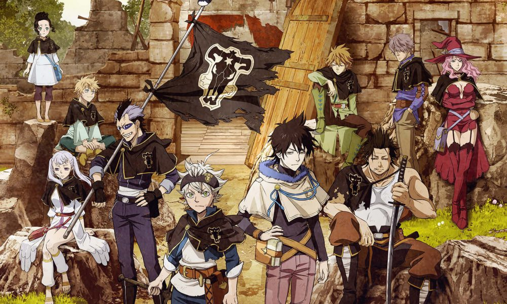
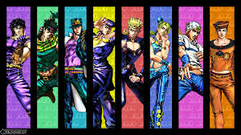

List Of My Favorites
-
Ouran Highschool Host Club
Throwback to middleschool weekends with my siblings

This anime was hilarious and great for unwinding and relaxing with the sibs -
Soul Eater
Also a throwback to middleschool weekends with my siblings

This anime was more serious but still great -
Neo Yokio
Me and my siblings dicovered this spoof of an anime on Netflix

I will forever love the Toblerone because of this not for its taste but because it is forever iconic -
Saga Of Tanya The Evil
This was a reccomendation from my brother he said I reminded him of Tanya... I cant say I agree with his assement.. but I cant say I dont disagree either
 -
Baka and Test
I wish school was like this anime. I would have loved Highschool if this was how it was.

-
Black Clover
This one is my favorite magic anime. My favorite Character is Lady Vemillion
 -
JoJo's Bizarre Adventure
My boyfriend introduced me to this anime and ive been hooked ever since.

I play the opening theme songs of each part in the mornings to wake myself up. -
My Hero Academia
I LOVE THIS ANNIME!!!! It's mainstream but it gives me all the feels. I love all the chracters and the story. It makes me so happy to watch.